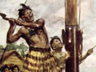
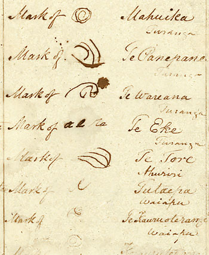
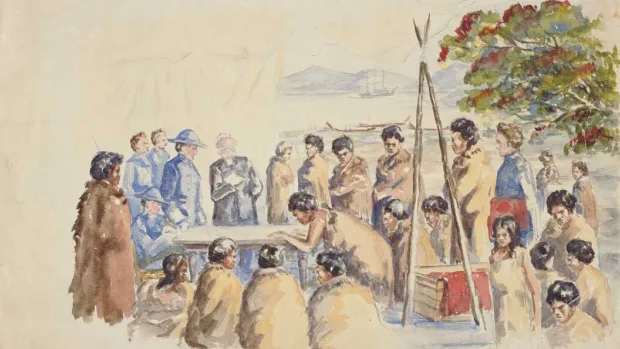
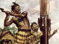
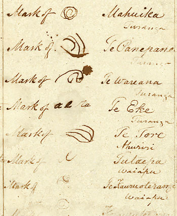
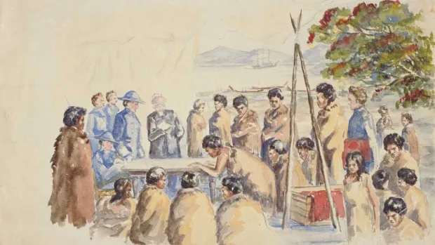

Drafting and signing The Treaty
Te tiriti was drafted in English and then translated into Māori by missionary Henry Williams and his son Edward. It was presented to around 500 Māori at Waitangi on 5 February 1840 and there was much debate. The next day, 6 February, more than 40 chiefs signed te tiriti. Copies of te tiriti were taken around the country, and many more chiefs signed. Most Māori signed the te reo tiriti. Reasons why chiefs signed te tiriti included wanting controls on sales of Māori land to Europeans, and on European settlers. They also wanted to trade with Europeans, and believed the new relationship with Britain would stop fighting between tribes. Those who did not sign te tiriti were concerned they would lose their independence and power, and wanted to settle their own disputes. Some chiefs never had the opportunity to sign it, as it was not taken to all regions.
What did The Treaty say?
The meaning of the English treaty was not exactly the same as the meaning of the Māori tiriti.
Article One: in Māori it gave Queen Victoria governance over the land, while in English it gave her sovereignty over the land – a stronger term.
Article Two: Te tiriti guaranteed chiefs ‘te tino rangatiratanga’ – chieftainship over their lands, villages and treasured things. It also gave the Crown the right to deal with Māori in buying land. The English-language treaty gave chiefs ‘exclusive and undisturbed possession’ of lands, forests, fisheries and other property. It also gave the Crown an exclusive right to deal with Māori over buying land.
Article Three: both versions gave Māori the queen’s protection and the rights of British subjects.
Te tiriti in the 19th century:
Even though not all chiefs signed te tiriti, the British government decided it placed all Māori under British authority. It did not take long for conflicts to arise between Māori and European settlers who wanted more land. The government often ignored the protections te tiriti was supposed to give Māori.
In 1858 some iwi (tribes) chose Waikato rangatira Te Wherowhero as the first Māori king, with the aim of protecting Māori land. The government saw this as a direct challenge to British authority, and invaded Waikato. There were other wars between the government and Māori, and land was confiscated from several North Island iwi.
By the end of the 19th century most land was no longer in Māori ownership, and Māori had little political power. Pākehā settlement and government had expanded enormously.
Maori responses to The Treaty
Many Māori doubted the government would meet its obligations under te tiriti. In the late 19th century Māori held many meetings to debate treaty issues. Between 1882 and 1924 four groups of Māori travelled to England to petition the British monarch and government to ask for treaty rights to be observed. In the 1880s the King movement set up its own parliament, the Kauhanganui, and in 1892 a Kotahitanga (Māori unity) parliament was set up.
Te tiriti in the 20th century
In the 20th century, Māori land continued to be sold and was sometimes taken by the government for public works (as it had been from the 1860s). In the early 20th century leaders such as Apirana Ngata introduced schemes to develop Māori land and the government began to support Māori farming ventures. Some fishing rights were acknowledged by the government in the 1920s.
In 1932 the governor-general, Lord Bledisloe, and his wife gifted to the nation the house and land where te tiriti had been signed at Waitangi. In 1940 the country celebrated 100 years since the signing of te tiriti. The occasion was intended as a demonstration of national pride and unity, but Māori were less enthusiastic as te tiriti had not been honoured.
After the Second World War there were commemorations at Waitangi on 6 February each year, and public awareness of te tiriti grew. In the 1970s and 1980s protests about Māori treaty rights became more common.
The Treaty of Waitangi Act 1975 established the Waitangi Tribunal to consider claims that the government had breached te tiriti, and make recommendations to the government. The principles of te tiriti – a partnership between the government and Māori – began to be mentioned in other New Zealand laws, and knowledge about te tiriti became more widespread. However, resolution of grievances under te tiriti remained an ongoing process.
 




